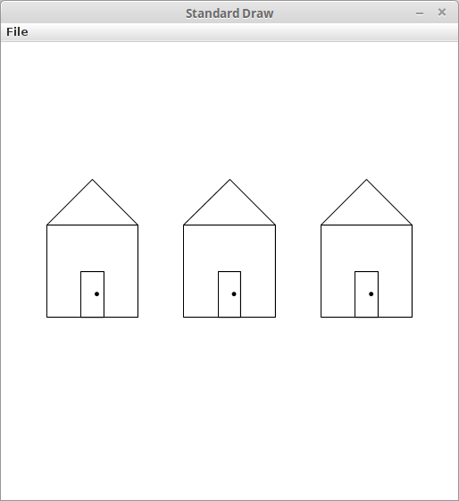
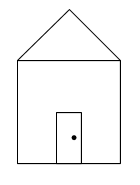

James Madison University, Fall 2017 Semester
Lab09: Methods, Drawing, and Style

Objectives
Practice writing and calling
voidmethods that take parameters.Use Checkstyle to improve readability and follow style guidelines.
Key Terms
- parameter (or formal parameter)
- A variable declared inside the parentheses of a method header.
- argument (or actual parameter)
- A value passed to a method at the time the method is called. The value will be assigned to the parameter variable.
Part 1: Drawing Pictures
For this activity we will make use of the StdDraw
class developed by Robert Sedgewick and Kevin Wayne at Princeton University.
This class provides a set of methods that make it possible to create
simple drawings in Java.
You can find the complete documentation online, but today we will only be working with the following methods:
Create a folder to contain your work for today's activity.
Copy the following files into your folder:
Open
DrawDemo.javain DrJava. Take a minute to read over the code, then compile and execute it.By default, (0, 0) is located in the lower-left corner of the StdDraw drawing window and (1, 1) is in the upper-right. Modify
DrawDemo.javato place a small filled rectangle in the upper-left corner of the drawing window. Test your modifications.
Part 2: Drawing Houses
Open
Houses.javausing DrJava. Take a minute to read over the provided code, then try running it.Add a new method named
drawHousethat satisfies the following requirements:- It should take two
doubleparameters namedxandy. - When executed, it should draw a house that looks like the following:
 - The total width of the house should be .2.
- The total height of the house should be .3. The rectangle at the bottom should have a height of .2 and the roof should have a height of .1.
- The rectangle that forms the bottom part of the house should be centered at (x, y). In other words, the location of the house should be determined by the parameter values.
- The method should include a call to
drawDoor. YOU SHOULD NOT COPY THE CONTENTS OFdrawDoorINTOdrawHouse!
- It should take two
Modify your
mainso that in includes three calls todrawHouse. Houses should be drawn at (.2, .5), (.5, .5) and (.8, .5). The result should look like the image at the top of this page.
Part 3: Checkstyle
Make any necessary modifications to ensure that your finished program meets all style requirements. Fix any style issues that are identified by Checkstyle, and review the other requirements from the course style guide.
Part 4: Submission
Uplod the following two files to Canvas:
Upload your completed
Houses.java. In order to get full credit, your submission will need to pass all of the Checkstyle tests.Save a copy of the image generated by your completed
Houses.java. You can save the image through the "File" menu of the StdDraw drawing window. The filename should be "Houses.jpg" (without the quotes).
If You Have Extra Time
Add a
drawWindowmethod toHouses.javaand use it to improve yourdrawHousemethod.Create a
drawStreetmethod that draws three houses with a road in front of them. Modify your main to include two calls todrawStreet.
Acknowledgement
This lab was originally written by Prof. Nathan Sprague.